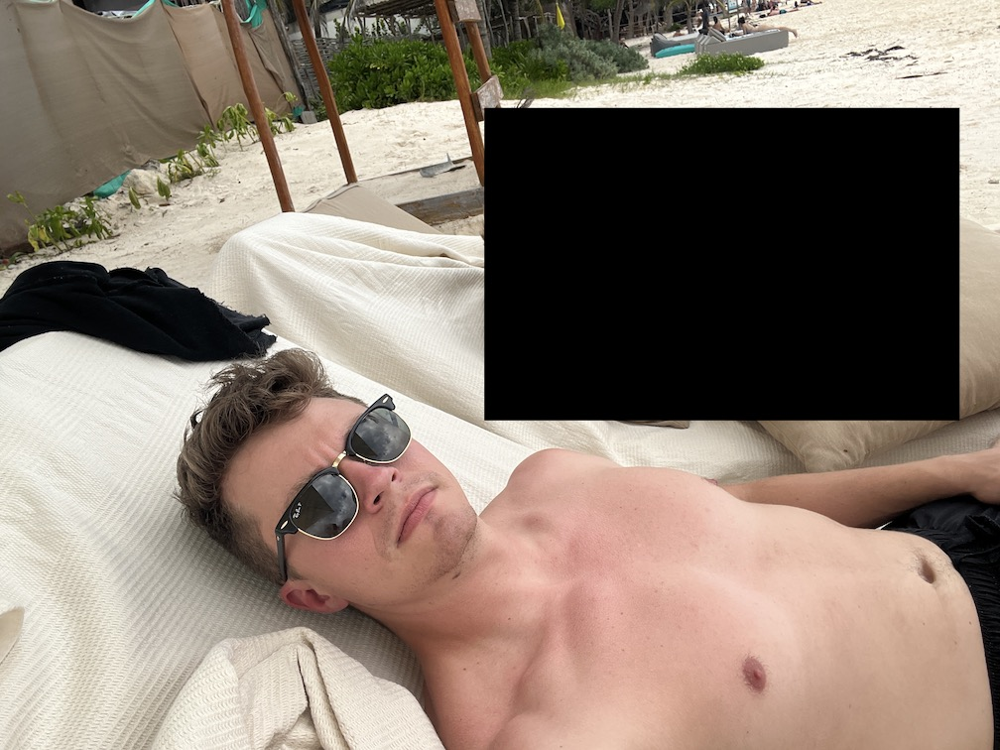
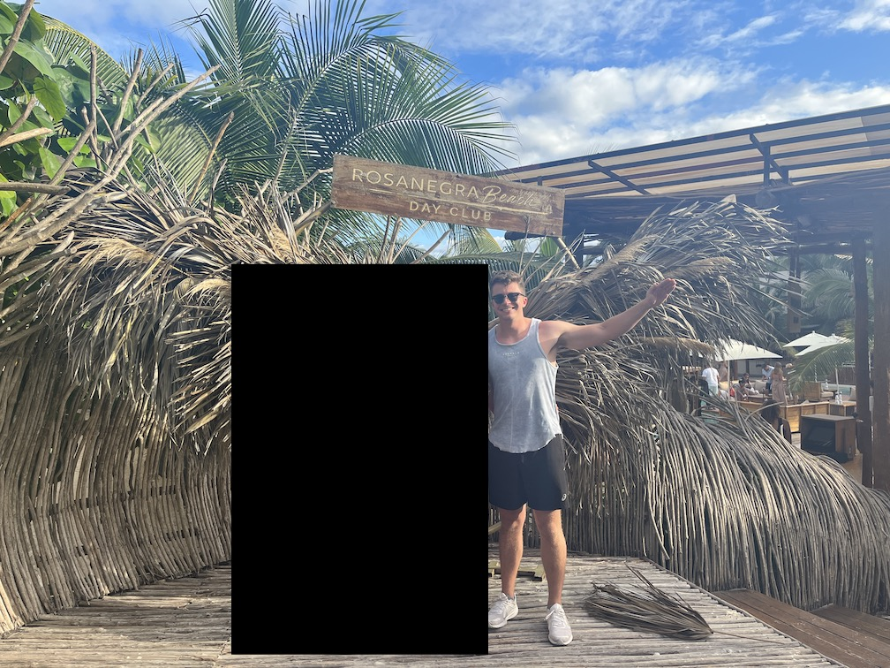

Tulum trip report from 15-18 December 2023.
The flight from my home airport to Cancun had the worst turbulence I've ever experienced. One minute we were gently flying in the clouds above Yucatán, the next I was four inches out of my seat, stopped only because of my seatbelt. Terror had set in amongst the passengers in the form of screaming and exclamations. I remained calm, confident in the plane's ability to withstand stress and trusting the engineers who designed it. (That being said, it definitely didn't help when the flight attendant got on the intercom and told people to buckle their seatbelts in a panicky voice.) We landed without issue
I hung around the Cancun airport reading until my bus set off. A taxi whisked me from the Tulum bus stop to the Airbnb I was staying at.
And what an Airbnb it was! Tucked away within the jungle in a new, still-under-construction development south of the main town, there were three floors: master bedroom and bathroom on one; kitchen, living room, bathroom, and bedroom on two; and a tiny pool (hot-tub-sized without the heat) and lounge area on the roof. It was wonderful.
My first meal—an açaí bowl at a local health shop—was my first indication that things wouldn't be as cheap here as I expected: $14! It was time to temper my expectations.
After hanging out at the Airbnb waiting for C, we taxied out to RosaNegra, a beachfront restaurant/club. A few fun things happened there:
We snagged some carajillos at another spot down the strip and headed back home for some much-needed sleep.
The first swimming pool we visited was a cenote, "a natural pit, or sinkhole, resulting from the collapse of limestone bedrock that exposes groundwater". The water was cool and refreshing, a nice contrast to the warm sun that quickly dried us off afterwards. We each had a few jumps in before calling it.
The second swimming pool we visited was the ocean. The water was cool and salty, the former nice and the latter disgusting. We had a nice dinner at Mezzanine, played in the ocean, took some pictures, then headed out.
Evening activities included a gym session and steak eating.
First stop was the Tulum Jungle Gym, the (probably) most Instagrammable spot in all of Tulum. Complete with bamboo bars, stone and wooden plates, and some interesting machines, legend has it this gym was built and maintained by the native Mayans. I cranked out quite a few overhead presses, lat pulldowns, and ring complexes.
Lunch consisted of a smoothie and torta nearby. We cashed in on our RosaNegra entry tickets and relaxed via lounging and carajillos on the beach (and got offered coke yet again!).
It was finally time for the crown food jewel of the trip: a rooftop nest dinner at Kanan. While delicious with an excellent atmosphere and service, the bugs... oh my gosh, the bugs. We sat very close to garden of plants and the bugs were ridiculous, so much so that we asked to move. Tip: choose to eat either far away from the plants or down below. Thank me later.
We scootered home in the dead of night and got some shuteye.
Up at 6:15am; scooter to bus stop; wait at bus stop; ride bus to Cancun; wait at gate; fly home; shoutout Global Entry.
The service industry still strikes me as strange. Wealthy people come down to Tulum to get pampered and every single one of their needs and desires taken care of. It just feels weird at times. See A Supposedly Fun Thing I'll Never Do Again.
There were so many different types of people. Partiers, relaxers, standard tourists.
I'm curious to see where property value goes in Tulum. There is still so much jungle left to develop between the beach strip and main town and they've already started pushing.
Beach vacations aren't my thing—there's just not enough to see and not enough to do (I know I didn't go to the Mayan ruins).